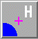

AddH 
AddH adds hydrogen atoms to molecules, as well as
OXT atoms where missing from peptide C-termini.
Chimera uses atom and residue names, or if these are not “standard,”
atomic coordinates, to determine connectivity and
atom types;
AddH then uses the atom types to determine the number of hydrogens
to be added and their positions.
The positions of pre-existing atoms are not changed, but
any lone pairs and unidentifiable-element atoms are deleted.
See also: FindHBond
There are several ways to start
AddH, a tool in the Structure Editing category
(including using it via
Dock Prep).
AddH is also implemented as the command
addh.
Models to which hydrogens should be added
can be chosen from the list with the left mouse button.
Ctrl-click toggles the status of an individual model.
To choose a block of models without dragging,
click on the first (or last) and then Shift-click
on the last (or first) in the desired block.
Consider each model in isolation from all others
- whether hydrogen placement should be affected by atoms within the same
model only. Otherwise, other models in the vicinity (except submodels of
the same model) may affect hydrogen placement, regardless of whether they
were chosen for hydrogen addition.
The Method for adding hydrogens can be:
- steric only - based on
atom types and clash avoidance
- also consider H-bonds (slower) (default) - based on
atom types, clash avoidance,
and hydrogen bond formation.
Considering H-bonds increases the calculation time.
Although hydrogens are placed to avoid clashes and form hydrogen bonds
where possible, they are not energy-minimized, and
a globally optimal network in terms of the number of H-bonds or
total H-bonding energy is not necessarily found.
Protonation states of certain ionizable sidechains can be specified.
By default, if amino acids have standard residue names, each histidine
sidechain will be protonated based on its local environment,
whereas the sidechains of other residue types will be assigned
protonation
states reasonable at physiological pH, regardless of the local
environment: negative glutamic acid and aspartic acid,
positive lysine and arginine, and neutral cysteine and tyrosine.
Alternative protonation states of histidine, glutamic acid, aspartic acid,
lysine, and cysteine can be specified interactively or
with special residue names in the input coordinate file:
- Choices for histidine:
- Residue-name-based (default)
- residue names will be used to determine which
histidine sidechain nitrogens should be protonated: the δ-nitrogen
in residues named HID, the ε-nitrogen in HIE, and both
nitrogens in HIP. Residues named HIS will be treated as unspecified,
and may end up with either or both sidechain nitrogens protonated,
depending on the method and the local environment.
- Specified individually... regardless of which of the names
above are used, the desired sidechain protonation state of each residue
will be specified in a dialog by the user
- Unspecified (determined by method) - regardless of which of the
names above are used for histidine residues, all will be treated as
unspecified, and may end up with either or both sidechain nitrogens
protonated,
depending on the method and the local environment.
- Choices for glutamic acid:
- Residue-name-based (default)
- residue names will be used to determine sidechain charge state:
GLU negatively charged and GLH neutral, OE2-protonated
- Specified individually... regardless of which of the names
above are used, the desired sidechain protonation state of each residue
will be specified in a dialog by the user
- Charged - negatively charged
- Choices for aspartic acid:
- Residue-name-based (default)
- residue names will be used to determine sidechain charge state:
ASP negatively charged and ASH neutral, OD2-protonated
- Specified individually... regardless of which of the names
above are used, the desired sidechain protonation state of each residue
will be specified in a dialog by the user
- Charged - negatively charged
- Choices for lysine:
- Residue-name-based (default)
- residue names will be used to determine sidechain charge state:
LYS positively charged and LYN neutral
- Specified individually... regardless of which of the names
above are used, the desired sidechain protonation state of each residue
will be specified in a dialog by the user
- Charged - positively charged
- Choices for cysteine:
- Residue-name-based (default)
- residue names will be used to determine sidechain charge state:
CYS unspecified and CYM negatively charged
- Specified individually... regardless of which of the names
above are used, the desired sidechain protonation state of each residue
will be specified in a dialog by the user
- Unspecified (determined by method) - regardless of which of the
names above are used for cysteine residues, all will be treated as
unspecified and the sidechain sulfur may be protonated or not
depending on the method and the local environment.
Clicking OK initiates hydrogen addition and dismisses the dialog,
while Close merely dismisses the dialog. Help opens this manual
page in a browser window.
If any atoms cannot be assigned a
type, another dialog will appear.
It is necessary to click on the line for each unassigned
atom and then indicate its
proper substituent geometry and number of substituents.
Added hydrogens are colored the
element color
(default white)
if the attached atom is colored by element, otherwise the same as
the attached atom.
The default VDW radii
of carbon, nitrogen, oxygen, and sulfur atoms
depend on whether hydrogen atoms are present.
Therefore, the radii of some atoms will
change when hydrogens are added.
AddH aims to generate
protonation states reasonable at physiological pH.
For example, hydrogens are not added to the phosphodiester moieties
of DNA and RNA. By default,
aspartic acid and glutamic acid sidechains are assumed to be
negatively charged, arginine and lysine sidechains positively charged
(although other states
can be attained).
Two chemical moieties are treated as ambiguous at biological pH:
- imidazoles such as histidine sidechains; histidine protonation states
can be specified by the user
or guessed by the method
- terminal phosphates (the third ionization);
if one P–O bond is at least 0.05 Å longer than the others
around that same phosphorus atom, that oxygen will be protonated
Potentially ambiguous or rare (shifted-pKa) protonation states,
especially in binding sites and nonstandard residues,
should be verified and corrected as needed. For example,
extra hydrogens can be deleted,
and atom types can be edited
(before hydrogen addition)
with setattr
or Build Structure.
Residues at the ends of connected peptide chains are inspected
to determine whether
they are real termini, based on any SEQRES information in the input PDB
file (or the mmCIF equivalent) and the presence or absence of additional
chains with the same IDs. Real N-termini are assumed to be
positively charged (+H3N–) and real C-termini are
assumed to be negatively charged (–CO2–).
If a C-terminal carboxylate is missing an oxygen (OXT), it will be added.
End residues that are not real termini are terminated like other chain-internal
residues, with N(H)– and –C(=O). The position of the
N-end “amide” hydrogen in such cases is not fully determined by the
positions of the existing atoms; AddH places this hydrogen
to produce a φ angle equal to that of the subsequent residue.
Bond lengths for X-H (X = C/N/O/S) are taken from the
Amber
parm99 parameters:
| X | atom types |
X-H bond length (Å) |
|---|
| sp3 carbon |
C3 | 1.0900 |
| sp2 carbon |
C2,Car | 1.0800 |
| sp carbon | C1 |
1.0560 |
| nitrogen | N3+,N3,Npl,Ng+ |
1.0100 |
| sp3 oxygen |
O3
(except water) |
0.9600 |
| sp3 oxygen |
O3
(water) |
0.9572 |
| sulfur | S3 |
1.3360 |
Bond lengths to other X are approximate,
obtained by adding the covalent bond radii of element X and H.
When a more intensive approach is desired, the program
Reduce provided as part of
MolProbity is a good alternative.
It places hydrogens to optimize local H-bonding networks
and avoid steric overlaps, while flipping certain sidechains
180° as deemed appropriate to fulfill these criteria.
Asparagine and glutamine sidechains may be flipped to switch their
terminal N and O atoms, and the imidazole ring of histidine may
be flipped to switch N and C identities. The protonation state of
histidine is adjusted based on the local environment.
The method is described in:
Asparagine and glutamine: using hydrogen atom contacts
in the choice of side-chain amide orientation.
Word JM, Lovell SC, Richardson JS, Richardson DC.
J Mol Biol. 1999 Jan 29;285(4):1735-47.
UCSF Computer Graphics Laboratory / August 2022